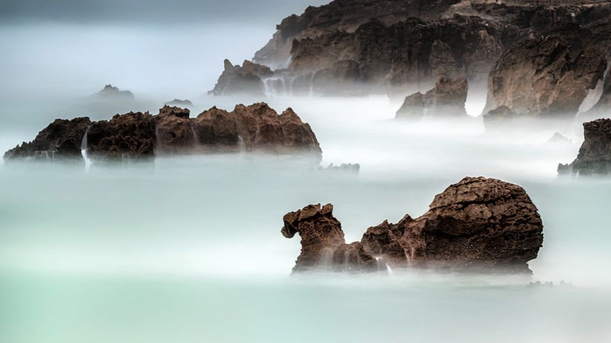

Camello
Playa del Camello is a small and picturesque beach located in Santander, Cantabria. Known for its unique shape and the large rock formation that resembles a camel, the beach is a hidden gem that offers a more tranquil and secluded atmosphere compared to other beaches in the area. Surrounded by cliffs and lush greenery, it is perfect for those looking for a quiet spot to relax and enjoy nature.
The beach has clear waters and is ideal for a peaceful day by the sea, with fewer crowds, especially during the off-season. It is accessible by a scenic walk, adding to its charm.
